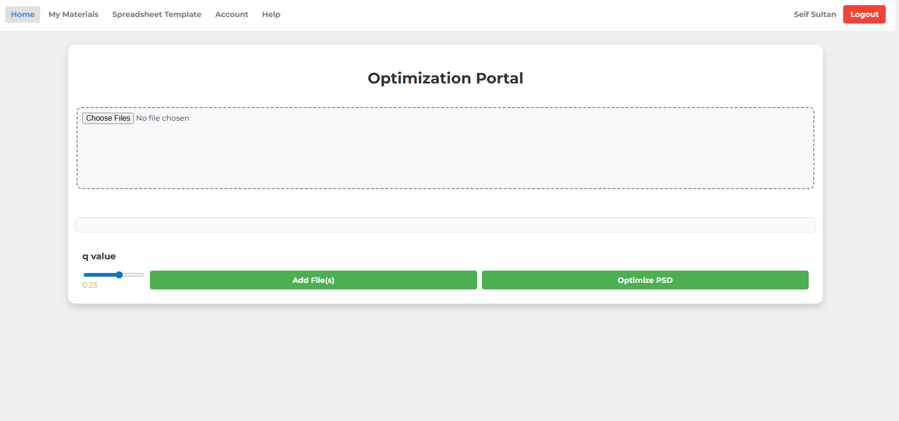
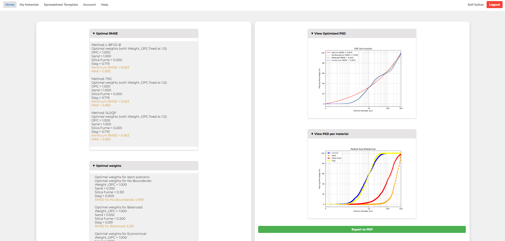

A research-based web application developed to automate the optimization of Ultra-High Performance Concrete (UHPC) mix designs. The portal allows users to upload experimental data files, then uses Python algorithms to analyze material proportions and optimize mix compositions for target properties such as strength and density. The project was built with a Flask backend for data processing and visualization, and a JavaScript, HTML, and CSS frontend for user interaction and graph generation. To visit the page with a demo account, use email: seif.khaled.sultan@gmail.com and password: demo123

